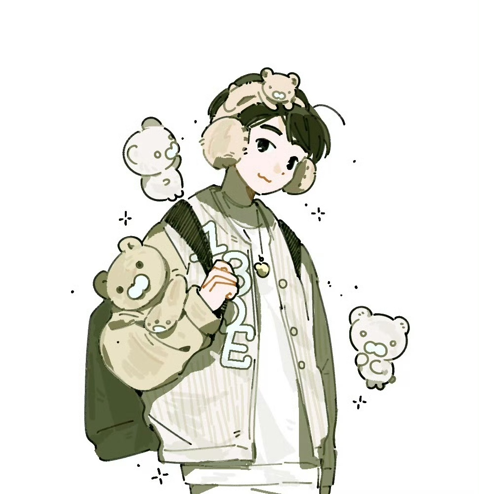

华北区大屏应援
大屏信息
商场名称：北京朝阳合生汇
大屏位置：商场主入口LED屏
播放时间：2025年4月20日-4月27日
播放时段：每天10:00-22:00，每小时整点播放3次，每次20秒
大屏图片
北京朝阳合生汇大屏效果图
华东区大屏应援
大屏信息
商场名称：上海环球港
大屏位置：中庭主广场大型LED屏
播放时间：2025年4月19日-4月25日
播放时段：每天9:30-21:30，每30分钟播放1次，每次30秒
大屏图片

上海环球港中庭大屏效果图
华南区大屏应援
大屏信息
商场名称：广州太古汇
大屏位置：一楼中庭环形LED屏
播放时间：2025年4月21日-4月28日
播放时段：每天10:00-22:00，每小时播放2次，每次25秒
大屏图片
广州太古汇环形LED大屏效果图
西南区大屏应援
大屏信息
商场名称：成都太古里
大屏位置：商场北区入口LED大屏
播放时间：2025年4月22日-4月29日
播放时段：每天11:00-22:00，每45分钟播放1次，每次15秒
大屏图片
成都太古里北区LED大屏效果图
西北区大屏应援
大屏信息
商场名称：西安大悦城
大屏位置：商场南广场外墙LED巨幕
播放时间：2025年4月18日-4月25日
播放时段：每天18:00-22:00，每20分钟播放1次，每次40秒
大屏图片

西安大悦城外墙LED巨幕效果图